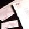
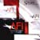

Updating an Identity
Software companies tend to be more product than customer-benefit oriented. One of the most important things we brought to the launch of Adobe's new software product was a customer perspective that led Adobe to change the very architecture of its product-series offering.Brand Identity: Product Positioning, Name and Brand Identity
Our positioning included creating the product name, "Acrobat," and its graphic expression, developed to cut through the densely competitive, jargon-filled technology environment and convey "amazing feats across platforms." Along with usual identity applications, the "Acrobat" symbol also needed to serve as an icon for the product on and off the computer screen.
Advertising
We created the advertising strategy for introduction of the software to the business marketplace.
Launch Video
To introduce the Acrobat family of software at COMDEX, the industry's annual convention, we produced a six minute video that humorously dramatized Acrobat's potential role in business communications by highlighting the foolish inefficiency of current business practices juxtaposed with the benefits of "Acrobat". The demonstration earned Acrobat the "Best of Show" and "Most Significant Technology" awards sponsored by BYTE magazine and the Interface Group.